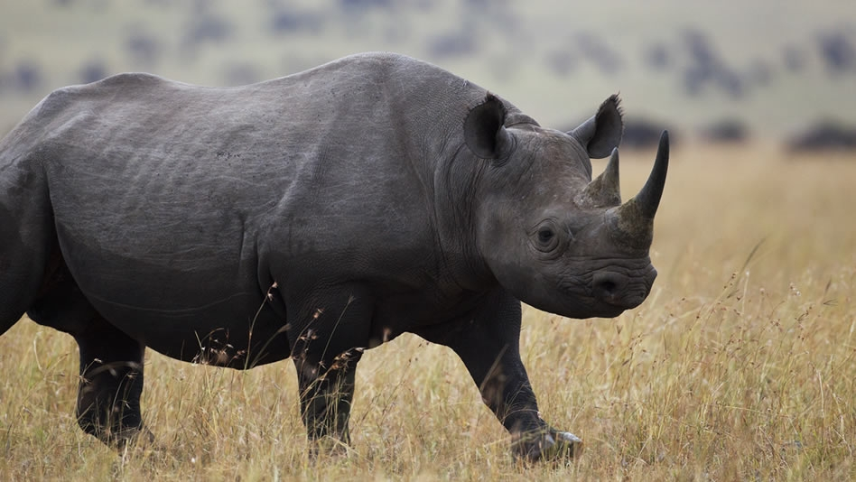

rinoceronte de labio ganchudo (Diceros bicornis)

El rinoceronte negro tiene una distribución geográfica bastante limitada. Todas las subespecies se concentran exclusivamente al sur y este de África, abarcando Angola, Kenia, Mozambique, Namibia, Tanzania, Zimbabue y Sudáfrica. Algunos individuos fueron reintroducidos a Botsuana y Ruanda, y desde hace algún tiempo no se observan ejemplares en Etiopía. Está oficialmente extinto en Chad y Camerún, siendo este último país hogar quien albergó al ahora desaparecido Rinoceronte negro occidental. Su hábitat está representado por desiertos, sabanas y entornos con arbustos y niveles de humedad más altos (bosques humedales). Se mantienen cerca de suministros de agua y lagunas minerales.
Los rinocerontes negros se alimentan en horas nocturnas y crepusculares, ya que durante el día se protegen de los rayos del sol y las altas temperaturas. A pesar de su gran tamaño, son animales herbívoros que se nutren con hojas de árboles, arbustos frondosos, ramas, brotes, plantas leñosas y algunos frutos, todo ello de más de 200 tipos de vegetación. Aún con esa disponibilidad, tienden a seleccionar sus plantas y arbustos favoritos. Sus labios son móviles y muy flexibles, por lo que actúan muy similar a la lengua de una jirafa.
El rinoceronte negro es un animal solitario de fuerte temperamento que suele actuar con agresividad cuando se siente en peligro. Una vez que ataca, se retira para refugiarse. Pero si el intruso camina hacia su dirección, puede aparecer de sorpresa y agredir nuevamente por emboscada. Los machos dominantes son los que generalmente transitan solos, pero pueden permitir la presencia de otros machos, siempre y cuando estos se mantengan sumisos. De lo contrario, se crean enfrentamientos. Los individuos jóvenes tienden a llevar el lugar de subordinados. Dejan marcas de olor a través de orina y estiércol, se cree, para señales o indicaciones para ellos mismos. Hoy en día, por su baja población ha disminuido los enfrentamientos por dominio.